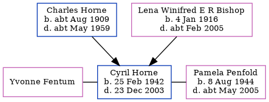

Cyril Francis Horne 1942 - 2003
[ Home ] | [ Calendar ] | [ Surnames Index ] | [ Errors ] | [ Family History ]The child of Charles Horne (a kitchen porter) and Lena Winifred E R Bishop, Cyril Horne, the second cousin on the father's side of Nigel Horne, was born in Ashford, Kent, England on 25 Feb 19421,2. He was married twice - to Yvonne Fentum (c. May 1965 in Ashford) Pamela Penfold (c. Feb 1994 in Ashford)3.
He died on 23 Dec 2003 in Kent, England2.
Parents
- Charles Isaac was born c. Aug 1909
- Lena Winifred E R was born on 4 Jan 1916
Citations
- England & Wales births 1837-2006 - Findmypast
- England & Wales deaths 1837-2007 - Findmypast
- England & Wales Marriages 1837-2005 - Findmypast
Media
England & Wales births 1837-2006 - BMD/B/1942/1/AZ/000564/056
England & Wales deaths 1837-2007 - BMD/D/2004/1/86054530
England & Wales deaths 1837-2007 - BMD/D/2004/1/85521077
England & Wales marriages 1837-2008 - BMD/M/1994/2/89078642
England & Wales marriages 1837-2008 Transcription - BMD-M-1965-2-AZ-000448-001
Family Tree
Map
Generated by ged2site. Last updated on Jul 3, 2024